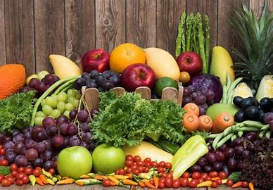

Connexion
TOUT
ACTUALITÉS
IMAGES
VIDÉOS
CARTES
Filtre adulte:
Modéré
Titres de page:
Automatique
Filtre
Nourriture
PNG
Nourriture
Cartoon
Nourriture
à Colorier
Nourriture
Française
Nourriture
Bébé
Nourriture
Africaines
Chinois
Nourriture
Viande
Wallpapers Nourriture Allemande -
MaximumWall
Télécharger fonds d'écran nourriture
gratuitement

La nourriture bio, bonne pour la santé? -
Pieuvre.ca
J’ai mangé de la nourriture pour animaux -
URBANIA
Télécharger fonds d'écran nourriture
gratuitement
Aliments nourriture assortis en
lot de 48 en Plastique soufflé ...
Nourriture - Page 29
Délices culinaires - la nourriture
asiatique en 80 photos délicieuses ...
Télécharger fonds d'écran nourriture
gratuitement
Nourriture déshydratée : Quels avantages ? -
Devenir survialiste